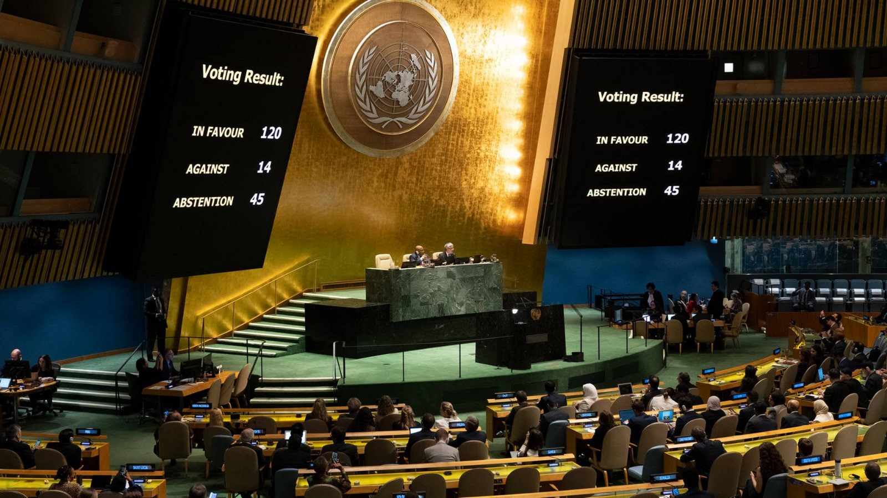
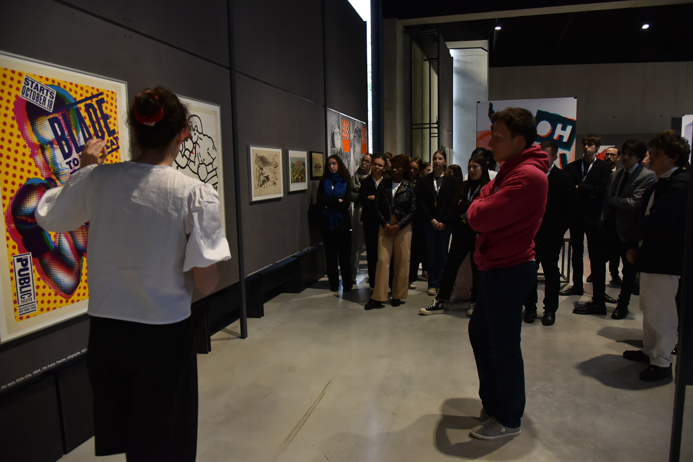
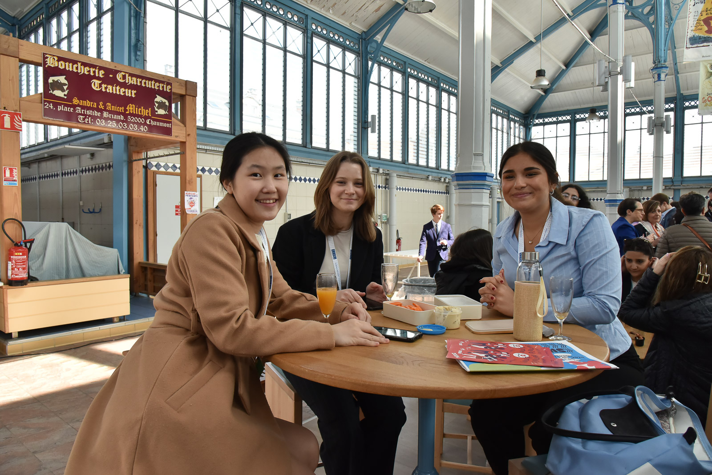

CHAU'MUN
 Comment faire face aux conséquences de l'élévation du niveau des océans et faciliter l'adaptation des sociétés à cette situation ?
Comment faire face aux conséquences de l'élévation du niveau des océans et faciliter l'adaptation des sociétés à cette situation ?
 19-21 mars 2025
19-21 mars 2025
 ->
->

 Comment faire face aux conséquences de l'élévation du niveau des océans et faciliter l'adaptation des sociétés à cette situation ?
Comment faire face aux conséquences de l'élévation du niveau des océans et faciliter l'adaptation des sociétés à cette situation ?
 19-21 mars 2025
19-21 mars 2025
Les séances de négociations sont séparées en deux comités : Un comité en francais et un en anglais. Ceux-ci se déroulent en simultané dans des salles différentes et traitent de sujets qui diffèrent entre eux. Cela permet de proposer une expérience unique à chacun sans se soucier de ses connaissances linguistiques.


Durant la session 2024 du CHAU'MUN le comité en français traitait de la consommation d'une manière plus durable et s’est déroulé dans une des salles de la mairie. Une salle particulièrement bien décorée qui a servi à apporter une dimension solennelle au débats. Voici quelques photos du CHAUMUN 2024 :
Au même moment se déroulait la conférence UNESCO en anglais avec des élèves venus de Tchèquie, de Pologne, d'Azerbaïdjan, d'Allemagne et de Taïwan. Elle a eue lieu dans la salle "Canopé" et traitait de l'accès à l'éducation pour les filles dans le monde.
Le musée du Signe, centre national du graphisme à Chaumont nous a ouvert ses portes l'instant d'une visite...
...pour que les élèves puissent profiter de sa collection d'affiche ainsi qu'une collection japonaise de tasse.

La section hotelière du lycée Denis Diderot de Langres et leur repas exceptionnel...

...permettant aux élèves de différentes nationalités de se réunir et de partager ce moment de plaisir.
